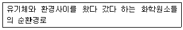
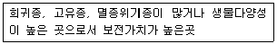
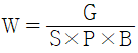
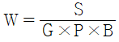
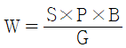
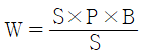
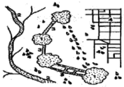

자연생태복원기사(구) (2005-09-04 기출문제)
1과목: 환경생태학개론
1. 대기에는 약78%의 질소가 있고, 식물체는 대기질소를 바로 이용하지 못하기 때문에 질소는 식물의 주요 생장제한요소이다. 이러한 대기 질소가 생물계로 유입되는 경로에는 세가지가 있는데 이에 해당하지 않는 것은?
- 대기방전으로 인한 산소결합 후 강우와 함께 토양 유입
- 음식물 하적장에 의한 질소생산
- 산업적 질소고정으로 절소비료를 산업적으로 생산
- 공생미생물이 질소고정하여 기준 식물에게 질소공법
(정답률: 알수없음)

2. 서로 떨어져 있을때에는 생장이 일어나지 못하나 특정한 두 종이 반드시 서로를 필요로 하는 관계는?
- 상리공생
- 상조공생
- 편리공생
- 내부공생
(정답률: 알수없음)
3. 군집에 대해 바르게 기술된 것은?
- 군집은 1차군집과 2차군집만으로 나뉜다.
- 생물적 요인과 무생물적 요인만으로 구성되어 있다.
- 군집의 기능상 특징과 구조상 특징이 같다.
- 생산자, 소비자, 분해자의 3가지 기능적 집단으로 구성된다.
(정답률: 알수없음)
4. 다음 중 육상생태계에서 볼 수 없는 식물종은?
- 참나무
- 소나무
- 애기부들
- 장구밥나무
(정답률: 알수없음)
5. 다음의 지구상의 생물군 중 확인 및 명명된 생물종 중 가장 종수가 많은 것은?
- 척수동물
- 식물
- 균류
- 곤충
(정답률: 알수없음)
6. 습지생태계에 대한 다음 설명 중 거리가 먼 것은?
- 종다양성이 높은 생태계이다.
- 육상생태계와 수생태계 사이의 고립지대이다.
- 수분, 토양, 식생이 습지를 판별하고 분류하는 주요 지표이다.
- 습윤상태를 유지하면서 특별히 그 상태에 적응된 식생이 서식하고 있는 곳이다.
(정답률: 알수없음)
7. 다음 보기가 설명하는 것으로 가장 적당한 것은?

- 물질 순환
- 에너지 순환
- 생지화학적 순환
- 생물종 순환
(정답률: 알수없음)
8. 다음 중 환경적 경사(gradient)를 잘못 설명한 것은?
- 온도경사 - 산정에서 계곡까지 이르는 동안 나타나는 경사
- 수분경사 - 주요 기후계를 따라 습한곳에서부터 건조한 곳까지 이르는 동안 나타나는 경사
- 전이대(ecotone) - 생태적으로 유사한 상태
- 수심경사 - 연안에서 수체로 들어감에 따라 나타나는 경사
(정답률: 알수없음)
9. 다음 중 담수 또는 연안에서 조류발생과 가장 관련이 깊은 환경요인은?
- 광선, 영양물질, 온도들의 상호작용
- 영양물질, 이산화탄소의 농도, 수질오염원의 상호작용
- 온도와 난류, 용존산소량의 증가, 수질오염원의 상호작용
- 용존산소량 온도, 광선등의 상호작용
(정답률: 알수없음)
10. 식물의 분포를 지배하는 가장 큰 요인은?
- 토양의 성분과 영양
- 빛과 이산화탄소
- 기온과 강수량
- 기온과 바람의 방향
(정답률: 50%)
11. 지구의 생물다양성을 유지하기 위한 국제적인 기구로 World Conservation Union, World Resources Institute, United Nations Environmental Program등에서 제시한 지구생물다양성 전략(Global Biodiversity Strategy)의 주목적에 해당하지 않는 사항은?
- 지구상의 필수적인 생태학적 작용들과 생명유지 체제 유지
- 지구의 생물 다양성 보전
- 지구 천연자원의 지속가능한 개발 보장
- 개체수가 현저히 감소한 북양 물개(northern fur seal)의 포획금지안 결의
(정답률: 알수없음)
12. 다음 조기는 어떤 습지식물을 설명한 것인가?
- 핵심지역(Core)
- 완충지역(Buffer)
- 전이지역(Transition)
- 생물다양선보전지역
(정답률: 알수없음)
13. 보전지역 설정을 위한 유네스코 MAB모델에서 다음 설명에 적합한 곳은?

- 핵심지역(Core)
- 완충지역(Buffer)
- 전이지역(Transition)
- 생물다양성보전지역
(정답률: 알수없음)
14. 식생의 동심원적 구조는 깊이에 따라 형성되는데, 호수의 중심으로부터 육상까지 일전한 경사를 가진 경우, 호수의 중심부에 형성되는 식생은?
- 개구리밥, 연꽃 등의 부유식생
- 붕어마름, 검정말 등의 침수식생
- 애기부들, 갈대 등의 정수식생
- 버드나무 등의 소택관목식생
(정답률: 알수없음)
15. 여름에 온대지방의 호수들은 깊이에 따라 표수층, 중수층(수온약층), 심수층으로 나누어지는데, 이들을 설명 한 것 중 잘못된 것은?
- 수중 용존산소량은 표수층이 가장 높고, 심수층이 적다.
- 수심에 따라 밀도는 표수층에서는 낮게 유지되고, 심수층에서는 높게 유지된다.
- 표수층은 심수층에 비해 산소와 영양염이 충분한 층이다.
- 수온약층은 온도가 격히 변하는 변수층이다.
(정답률: 알수없음)
16. 질소순환과 관련된 설명으로 틀린 것은?
- 생물체내의 아미노산이나 단백질을 생명체가 죽은 후 분해되어 암모니아가 되면 식물이 흡수한다.
- 토양중에 방출된 암모니아는 직접 또는 어느 종의 세균이 관여하는 질산화작용에 의해 아질산이나 질산으로 산화되어 식물이 흡수한다.
- 혐기적 조건하에서 관련세균에 의하여 질산이 암모니아로 환원되는 질산작용이 지배적이다.
- 생태계에서는 질소가 공기중으로 소실되는 탈질작용도 진행되고 있는데, 이것은 산소가 부족한 흙속이나 진흙속에서 어떤 종의 세균에 의해 이루어진다.
(정답률: 알수없음)
17. 생태계에서 동식물의 분포와 풍부도를 규제하거나 제한하는 생태적 조건을 제한요인(limiting factor)이라 한다. 이와 같은 제한요인의 개념은 1840년 독일의 생화학자에 의해 농작물 생산량과 비료와 관계에서 성립하는 원리로 주장되었다. 위에 해당하는 법칙은 무엇인가?
- Shelford의 내성의 법칙
- Liebig의 최소량의 법칙
- Gause의 경쟁배타이 원리
- 최종수량 일정의 법칙
(정답률: 알수없음)
18. 몬트리얼 의정서는 어떤 물질의 사용을 금지하기 위한 것인가?
- 이산화탄소
- 메탄
- 질소산화물
- 프레온가스
(정답률: 알수없음)
19. 다음 수종 중 자동차 배기가스에 강한 수목은?
- 젓나무
- 향나무
- 단풍나무
- 목련
(정답률: 알수없음)
20. 산성비를 잘못 설명한 것은?
- 산성비의 원인은 황산이온, 질산이온, 염소이온등이다.
- pH 6.0보다 낮은 pH를 나타내는 강우를 말한다.
- 공장이나 자동차에서 방출되는 황산화물이나 질소산화물이 빗물에 섞여 지상으로 낙하해 온 것이다.
- 산성비에 의해 유립의 젓나무, 독일가문비들이 피해를 입었다.
(정답률: 알수없음)
2과목: 환경계획학
21. 다음 중 환경정책기본법에서 정한 “환경훼손”에 해당되지 않는 것은?
- 야생 동ㆍ식물의 남획
- 자연경관의 훼손
- 표토의 유실
- 조림지의 벌채
(정답률: 알수없음)
22. 새로 시행 중인 국토의 계획 및 이용에 관한 법률에 의한 국토의 용도지역이 아닌 것은?
- 도시지역
- 준도시지역
- 농림지역
- 자연환경보전지역
(정답률: 알수없음)
23. 다음 중 지속가능한 도시의 개념이 아닌 것은?
- 자연과 공생하는 도시
- 에너지 절약적 토지이용구조
- 물순환을 위한 물의 재사용
- 도시간 거리를 멀게하여 교통수단의 적극적 활용
(정답률: 알수없음)
24. 자연공원의 ‘자연보존지구’지정에 해당되지 않는 대상지는?
- 생물 다양성이 특히 풍부한 곳
- 자연생태계가 원시성을 지니고 있는 곳
- 경관이 특히 아름다운 곳
- 등산객의 접근이 곤란한 곳
(정답률: 알수없음)
25. 도시계획에 대한 사전환경성 검토의 목적으로 가장 거리가 먼 것은?
- 도시계획에 대한 환경정 건전성 확보
- 환경적으로 건전하고 지속가능한 도시발전
- 도시인의 삶의 질 향상
- 도시계획에 대한 환경영향평가 대체
(정답률: 알수없음)
26. 유엔에서 녹색국민 소득계정의 사용을 권장하면서 기존의 국민 소득계정에 천연자원량의 변화와 환경질의 변화를 반영한 것으로 옳은 것은?
- 경제복지지표(MEW)
- 지속가능 경제복지지표(ISEW)
- 통합적 환경 경제계정체계(SEEA)
- 녹색 경제계정체계(CEA)
(정답률: 알수없음)
27. 멸종위기 야생동식물 및 보호야생동식물의 보전대책과 함께 포함되어야 한 사항으로 가장 거리가 먼 것은?
- 서식지역 및 서식분포의 현황
- 생태학적 특징, 학술상의 중요성 등 보전의 필요성
- 멸종위기 및 개체수 증감의 주요원인
- 서식지 활용과 교육관련된 내용의 홍보 및 광고
(정답률: 알수없음)
28. 다음 중 생물종의 감소를 방지하고 생물자원의 합리적 이용을 위해 1992년 6월 리우에서 채택된 협약은?
- 람사협약
- 생물다양성협약
- 사막화방지협약
- 기후변화협약
(정답률: 알수없음)
29. 도시계획시설사업의 시행자는 공사를 완료한 때에는 공사를 완료한 날부터 몇일 이내에 도시계획시설사업공사완료 보고서와 관련 서류들을 제출하여야 하는가?
- 3일
- 5일
- 7일
- 10일
(정답률: 알수없음)
30. 엔트로피에 대한 설명 중 옳지 않은 것은?
- 우주의 전체 에너지의 양은 일정하지 않다.
- 우주의 전체 엔트로피는 항상 증가한다.
- 사용 가능한 에너지가 사용 불가능한 상태로 변화하는 것이다.
- 엔트로피의 증가는 자원의 감소를 의미한다.
(정답률: 알수없음)
31. 다음 용도지구에 대한 설명 중 틀린 것은?
- 쾌적한 환경조성 및 토지의 고도이용과 그 증진을 위하여 건축물의 높이의 최저한도 또는 최고한도를 규제하는 것은 최고고도지구 및 최저고도지구이다.
- 학교시설ㆍ공용시설ㆍ항만 또는 공항의 보호, 업무기능의 효율화, 항공기의 안전운항등을 위하여 지정하는 것은 개발진흥지구이다.
- 문화재와 문화적으로 보존가치가 큰 건축물 등의 미관을 유지ㆍ관리하기 위하여 필요한 것은 역사문화미관지구이다.
- 녹지지역ㆍ관리지역ㆍ농림지역ㆍ자연환경 보전지역 또는 개발제한구역안의 취학을 정비하기 위한 지구는 취락지구이다.
(정답률: 알수없음)
32. 도로ㆍ댐ㆍ수중보ㆍ하구언 등으로 인하여 야생동식물의 서식지가 단절되거나 훼손 또는 파괴되는 것을 방지하고 야생동식물의 이동을 돕기 위하여 설치하는 인공구조물ㆍ식생등의 생태적 공간을 가리키는 것으로 옳은 것은?
- 대체자연
- 생태통로
- 자연유보지역
- 완충지역
(정답률: 알수없음)
33. 다음 중 환경의 자유재(free goods)에 대한 설명으로 틀린 것은?
- 자유재는 분리되지 않음
- 시장에서 판매되지 않음
- 제화의 창출에 아무도 자발적으로 공헌할 준비가 되어 있지 않음
- 자유재는 관리없이 무한정 쓸 수 있음
(정답률: 알수없음)
34. 서식처 유형별 복원기법에 있어서 생울타리의 기능 및 효과와 거리가 먼 것은?
- 야생 동ㆍ식물 서식처 효과
- 토양 개량 효과
- 토양침식 억제효과
- 방풍ㆍ방음 효과
(정답률: 알수없음)
35. 다음 중 법적으로 각 도시계획에서의 계획기간이 지정된 내용으로 틀린 것은?
- 광역도시계획 - 20년
- 도시기본계획 - 20년
- 도시관리계획 - 10년
- 지구단위계획 - 5년
(정답률: 알수없음)
36. 광역도시계획 중 광역계획권의 지정목적을 달성하는데 필요한 사항이 아닌 것은?
- 광역계획권의 녹지관리체계와 환경보전에 관한 사항
- 광역계획권의 공간구조와 기능분담에 관한 사항
- 경관계획에 관한 사항
- 제원조달에 관한 사항
(정답률: 알수없음)
37. 환경영향평가 범주 중 생활환경 범주에 속하지 않는 것은?
- 대기
- 수질
- 토지이용
- 지형지질
(정답률: 알수없음)
38. 수질정화를 위한 습지 조성지 습지의 기능이 아닌 것은?
- 홍수시 초기 유량을 담수시켜 수질개선
- 어류 및 야생생물을 위한 서식처를 확보
- 환경생태공원 및 생태학습장을 조성할 수 있다.
- 유지, 관리가 다른 수질개성방법에 비해 쉬우나 비용이 많이 든다.
(정답률: 알수없음)
39. 백두대간보호지역 중 핵심구역 내에서 할 수 있는 행위가 아닌 것은?
- 도로ㆍ철도ㆍ하천등 반드시 필요한 공용ㆍ공공용시설로서 대통령령이 정하는 시설의 설치
- 광산의 시설기준ㆍ개발면적의 제한, 훼손지 복구 등 대통령령이 정하는 일정조건하에서의 광산개발
- 교육ㆍ연구 및 기술개발과 관련된 시설 중 대통령령이 정하는 시설의 설치
- 원두막, 비닐하우스 등 지역주민의 생활과 관계되는 시설로서 대통령령이 정하는 시설의 설치
(정답률: 알수없음)
40. 다음 중 생태공원의 이용계획에 관한 기본적인 사고와 거리가 아닌 것은?
- 도시거리와 비 간섭거리
- 명료지각의 거리
- 환경수용력
- 체류거리
(정답률: 알수없음)
3과목: 생태복원공학
41. 야생동물 이동통로 조성과정중 계획 및 설계단계에서 고려되어야 하는 사항이 아닌 것은?
- 위치의 선정
- 유형의 선정
- 야생동물 이동과 주변환경과의 상호관계 파악
- 충돌방지 및 유도방안 마련
(정답률: 알수없음)
42. 다음 비탈(면)식생재녹화공법 중 식물의 자연침입을 촉진하는 식생공법을 총칭하는 것은?
- 식생대녹화공법
- 식생반녹화공법
- 식생유도공법
- 지오웨브공법
(정답률: 알수없음)
43. 다음은 콘크리트를 만들 때 사용되는 혼화재료들에 대한 설명으로 가장 거리가 먼 것은?
- AE제 : 콘크리트의 미세한 독립 공기포를 골고루 분산시키기 위해 사용하는 혼화제
- 촉진제 : 시멘트의 응결 및 경화를 염류에 의해 촉진 또는 자연시키는 혼화제
- 감수제 : 콘크리트의 응결 및 초기경화를 지연시킬 목적으로 사용하는 혼화제
- 플라이에시(릿y-ash) : 워커빌리티의 향상과 수화열 감소 및 건조수축의 방지를 위해 사용하는 혼화제
(정답률: 알수없음)
44. 자생적 독립영양천이 유형에서 종다양성의 천이과정으로 가장 적당한 것은?
- 지속적으로 증가한다.
- 처음에는 증가하나 개체의 수가 증가함에 따라 성숙된 단계에서는 감소한다.
- 처음에는 증가하나 개체의 수가 증가함에 따라 성숙된 단계에서는 안정된다.
- 처음에는 증가하나 개체의 수가 증가함에 따라 성숙된 단계에서는 안정되거나 감소한다.
(정답률: 알수없음)
45. 생태계 단편화가 생물 서식환경에 미치는 영향으로 옳지 않은 것은?
- 서식처의 상실
- 서식처 면적 감소
- 주연부 감소
- 인접 서식처 간 거리 증가
(정답률: 알수없음)
46. 다음 중 3단계 습지 시스템구조를 가장 잘 나타낸 것은?
- 오염물질의 유입 → 침전습지 → 오염물질 정화습지 → 생물다양성 향상습지
- 오염물질의 유입 → 오염물질 정화습지 → 침전습지 → 생물다양성 향상습지
- 오염물질의 유입 → 생물다양선 향상습지 → 침전습지 → 오염물질 정화습지
- 오염물질의 유입 → 침전습지 → 생물다양성 향상습지 → 오염물질 정화습지
(정답률: 알수없음)
47. 다음 중 폐광에서 생겨나는 훼손의 유형이 아닌 것은?
- 노출된 지형
- 광미((tailing, 鑛尾)
- 지반침하
- 여울(riffle)
(정답률: 알수없음)
48. 매립지 복원공법 중 산흙 식재지반 조성시 하부층이 사질토인 경우에 적용하는 기법으로 가장 거리가 먼 것은?
- 사주법
- 성토법
- 치환객토법
- 비사방지용 산흙 비복법
(정답률: 알수없음)
49. 다음 중 이탄습지(peatland)의 특징이 아닌 것은?
- 이탄습지는 최소한 수백년에서 수천년동안 퇴적된 곳을 말한다.
- 이탄습지는 습지의 유형 중 하천형 습지에 해당한다.
- 이탄습지는 평균적으로 2m~12m로 이탄토가 쌓인 곳이다.
- 이탄습지는 이산화탄소의 저장능력을 가지고 있다.
(정답률: 알수없음)
50. 다음 중 토양개량 자재로써 토양의 입단 형성 촉진에 사용되는 재료는?
- 목탄
- 벤토나이트
- 폴리에틸렌계 고분자계 자재
- VA균근균 자재
(정답률: 알수없음)
51. 자연 친화적 하천 정비시 유의사항으로 옳지 않은 것은?
- 자연형 하천의 통일성을 확보하기 위해 다양한 자연재료의 사용을 피한다.
- 하천 상류와 하류의 연속성을 확보해야만 한다.
- 하천형태에 대응한 다양한 수변환경을 조성하고 친수공간을 창출해야 한다.
- 자연하천의 고유한 매력을 유지하도록 해야 한다.
(정답률: 알수없음)
52. 다음 중 일반적인 산림토양의 단면을 가장 바르게 표현한 것은? (단, A : 용탈층, B : 집척층, C : 모래층, F : 발열층, H : 부식층, L : 낙엽층)
- L층 - H층 - A층 - F층 - B층 - C층 - 모암
- L층 - F층 - H층 - A층 - B층 - C층 - 모암
- L층 - H층 - F층 - B층 - A층 - C층 - 모암
- L층 - F층 - H층 - B층 - A층 - C층 - 모암
(정답률: 알수없음)
53. 자생식물 중 암석원에 식재가 가능한 것은?
- 둥근잎꿩의 비름
- 벌개미취
- 순비기나무
- 미나리
(정답률: 알수없음)
54. 생태적 복원에 있어서 식재기반의 조성은 식물이 살 수 있는 기반을 조성하는 것이다. 기반지의 경사에 대한 구체적인 내용이 틀린 것은?
- 0~3%의 경사지 : 표면배수에 문제가 있으나 정지작업의 필요성이 적다.
- 4~8%의 경사지 : 식재지로서 가장 적당하다.
- 9~15%의 경사지 : 흥미로운 시각 경험을 제공한다.
- 16~25%의 경사지 : 일반적인 식재기술로는 식재가 거의 불가능하다.
(정답률: 알수없음)
55. 다음 중 자연형 하천조성을 위한 기본방향과 가장 거리가 먼 것은?
- 자연하천의 고유의 매력을 유지할 수 있도록 한다.
- 주변자연과 생태적으로 조화되도록 정비한다.
- 물흐름을 최대한 빠르게 하기 위해 직선으로 조성한다.
- 지친 및 상ㆍ하류의 연속성을 고려하여 계획한다.
(정답률: 알수없음)
56. 다음 중 파종중량의 산출식으로 바른 것은? (단, W : 파종중량(g/m2), G : 발생기대본수(본/m2), S : 평균입수(입/g), P : 순량률(%), B : 발아율(%))




(정답률: 알수없음)
57. 생물 다양성의 보존에 대한 설명으로 틀린 것은?
- 생물 다양성은 종내, 종간, 생태계의 다양성을 포함한다.
- 생물 다양성은 생물종은 물론 유전자, 서식처의 다양성을 포함한다.
- 생물 다양성은 자연환경복원의 가장 중심적인 과제이다.
- 생물 다양상은 서식처의 복원보다는 생물종의 복원에 더욱 관심을 가져야 한다.
(정답률: 알수없음)
58. 자연형 하천 복구공사에서 이용하는 꺽꽃이용 버드나무 재료의 요건에 대한 다음 설명 중 틀린 것은?
- 꺽꽃이용 주가지의 직경은 1~2cm이고, 25% 이상의 맹아력이 있는 것을 선택하되 중산을 제어하기 위해 가지의 잎을 제거한다.
- 견실한 것을 선택하되 중산을 제어하기 위해 가지의 잎을 제거한다.
- 꺽꽃이용 나무의 길이는 공법유형에 따라 40~100cm로 채취한다.
- 채취 후 12시간 이내에 꺽꽃이가 가능하도록 한다.
(정답률: 알수없음)
59. 다음 중 환경조건 별 서식조류(鳥類)가 바르게 연결 된 것은?
- 갈대밭, 억새, 줄풀 등 정수식물대 : 개개비, 물닭, 청둥오리등
- 풀밭 : 황로, 왜가리, 검은댕기 해오라기
- 관목, 덤불류 : 해오라기, 쇠오리, 알락도요
- 교목 : 호반새, 고방오리
(정답률: 알수없음)
60. 다음 중 연못을 포함한 습지의 가장자리에 생육하는 정수식물이 아닌 것은?
- 개구리밤
- 갈대
- 부들
- 줄
(정답률: 알수없음)
4과목: 경관생태학
61. 항공사진판독을 이용하여 식생의 지리적 분포 및 침수피해여부등을 연구한 학자는?
- Forman
- Troll
- Godron
- Turner
(정답률: 알수없음)
62. 경관생태학에서 식생패치의 유형구분이 아닌 것은?
- 교란형
- 잔류(잔여)형
- 도입형
- 도시형
(정답률: 알수없음)
63. 생태천이의 초기단계를 이르는 용어로 가장 적당한 것은?
- 선구식생도입단계
- 극상단계
- 부식질 먹이연쇄단계
- 다충적 산림구조단계
(정답률: 알수없음)
64. 경관요소들이 수직적 위계관계를 가진 경관단위를 구성하면서 다른 경관단위와의 상호작용을 통하여 공간적으로 배치되는 것은?
- 토지시스템
- 생태계
- 경관모자이크
- 지역구분
(정답률: 알수없음)
65. 경관생태학에서 경관의 전체상을 이해하는데 필요한 자료가 아닌 것은?
- 인공위성 영상
- 항공사진
- 지질단면도
- 지형도
(정답률: 알수없음)
66. 식생의 생태학적 관리방식은 목표로 하는 자연과 그 관리에 중요한 정보를 준다. 천이의 순응을 이용한 관리방식에 해당되지 않는 것은?
- 자연의 변화를 자연천이와 재생에 맡기고 그 이상의 특별한 간섭을 행하지 않는다.
- 천이에 따라 발생하는 생물군집과 생태계 스스로의 변화를 존중한다.
- 가벼운 교란이 발생한 지역에 적합한 방식이다.
- 목표로 하는 생물군집의 생식, 생육을 위한 조건을 지원한다.
(정답률: 알수없음)
67. 지역환경시스템의 경관계획에 있어서 그림에서 보여주는 바와 같이 가장 우선되는 생태학적 필수요소들이 4가지 있다. 이들 필수요소에 대한 설명이 잘못된 것은?

- 1 = 몇 개의 큰 농경지 바탕
- 2 = 주요 지류 또는 하천 통로
- 3 = 큰 조각 사이의 통로와 징검다리의 연결성
- 4 = 기절을 따라 나타나는 자연의 불균일성 흔적
(정답률: 알수없음)
68. 다음 중 지리정보체계(GIS)에 대한 설명으로 가장 적절하지 않는 것은?
- 지도자료, 속성데이터, 소프트웨어, 하드웨어, 사람의 5대요소를 가지고 자료를 입력, 설계, 저장, 분석, 출력하는 일련의 작업을 총괄하는 개념
- 1966년 미국의 North Carollina 주립대학에서 개발이 시작되었으며, 통계적인 분석과 자료관리, 그래프 작성, 프로그래밍 등 다양한 기능을 갖춘 종합정보 관리시스템
- 지표면과 지하 및 지상공간에 존재하고 있는 각종 자연물(산, 강, 토지 등)과 인공구조물(건물, 철도, 도로 등)에 대한 위치정보와 속성정보를 컴퓨터에 입력하여 데이터 베이스화 또는 해석ㆍ처리하는 시스템
- 데이터베이스화된 위치정보와 속성정보를 이용하여 각종 계획수립과 의사결정 및 산업활동을 효율적으로 지원할 수 있도록 만든 첨단 정보시스템
(정답률: 알수없음)
69. 다음 중 인간과 물이 만나는 수변공간의 특성에 해당되지 않는 것은?
- 사람의 오감을 통해 전달되는 풍요로움과 편안함을 주는 정서적 성질
- 수면 상에 있는 물건을 실제보다 가깝게 보이게 하는 성질
- 도시공간을 일체적이고 안정된 분위기로 만드는 효과
- 도시의 소음을 정화시켜주는 효과
(정답률: 알수없음)
70. 경관생태 관리계획에서 가장자리 관리지침으로 바람직하지 않는 것은?
- 가장자리 모양은 복잡한 것이 좋으나 기존의 경과 및 문화유적과 조화를 이루도록 해야 한다.
- 흙, 둑, 돌무덤, 잘라낸 나무들은 가장자리의 가치를 증기시키지 않으므로 유의해야 한다.
- 수평적, 수직적 구조가 복합적이어야 한다.
- 가장자리는 바깥쪽으로 확장되어 넓고 부드러운 모양이 되어야 한다.
(정답률: 알수없음)
71. 메타개체군의 설명으로 가장 적당한 것은?
- 부적절한 서식공간에서 변종의 발생으로 새롭게 적응하며 생존하는 개체군 집단
- 복수의 지역개체군간에 낮은 빈도의 교류가 있는 경우에 지역개체군의 연합체로서 보다 최상위의 개체군
- 서식지 공간의 크기에 맞추어 개체의 크기를 조절하여 적응한 2세대 개체군 집단
- 환경오염 지표종을 선별하여 인공환경에서 배양한 환경식물 종 개체군들의 총칭
(정답률: 알수없음)
72. 자연의 복원과 관련된 용어의 설명 중 가장 올바른 것은?
- 복원 : 훼손된 자연의 기능만 새롭게 조성하는 것
- 복구 : 훼손된 자연을 자연상태와 유사한 상태까지 회복 시키는 것
- 재배치 : 훼손되지 이전의 자연구조를 원래 있는 상태로 완전히 회복시키는 것
- 대치 : 훼손된 지역을 자연의 회복혁에 의하여 완전히 재생되도록 하는 것
(정답률: 알수없음)
73. GIS의 장점에 대한 설명으로 틀린 것은?
- 고급인력만 이용 가능한 도구이다.
- 공간문제에 대한 모델을 재시함으로써 의사결정과정에 도움을 준다.
- 공간데이터와 속성데이터를 이용하여 다양한 조회 및 검색을 할 수 있다.
- 지리정보를 효과적으로 수집, 저장, 유지, 관리할 수 있다.
(정답률: 알수없음)
74. 지도의 유형 중 다른 것과 구분되는 지도는?
- 지형도
- 지적도
- 해도
- 식생도
(정답률: 50%)
75. 다음은 도시 비오톱 지도화 방법을 기술한 것이다. 가장 바르게 설명한 것은?
- 선택적 방법은 연구자의 주관에 따라 먼저 중요 비로톱을 선별한 후 조사분석하는 것으로 인력 및 비용이 많이 든다.
- 포괄적 방법은 도시전체의 모든 비오톱 공간을 대상으로 조사ㆍ분석하며 인력 및 비용을 절감할 수 있다.
- 절충식 방법은 선택적 방법 및 포괄적 방법을 혼합한 형태로 인력, 시간 및 비용이 가장 많이 드는 방법이다.
- 포괄적 방법은 비오톱 지도의 내용적 정밀도를 가장 높일 수 있는 장점이 있다.
(정답률: 알수없음)
76. 다음 중 염분이 높은 해안 습지에 서식하기 위한 염생식물의 대응기작에 해당되지 않는 것은?
- 염분자체의 흡수 억제기작 및 액포를 사용하여 염분을 저장하는 기작
- 표피의 염선에 염분을 축적하였다가 세포가 파괴되면서 체외로 배출하는 기작
- 뿌리에 흡수된 염분이 잎까지 이동되었다가 다시 뿌리를 통하여 토양으로 이동되는 기작
- 염분을 흡수하여 체내에서 분해하여 영양물질로 이용하는 기작
(정답률: 알수없음)
77. 경관의 변화에 따른 수문학적 현상에 대한 해석으로 가장 거리가 먼 것은?
- 지피상태를 바꾸는 토지이용과 도시화는 지하로의 침투되는 빗물의 양을 감소시킨다.
- 벌목에 의한 임상의 변화는 증발산의 양을 감소시킨다.
- 삼림이 경작지로 바뀌는 경우 지하수가 상승하여 토양에 염분을 집적시킬 수 있다.
- 지피상태를 바꾸는 도시화는 증발산량과 지하로 침투되는 빗물의 양을 감소시키고, 지표를 통해 하천으로 흐르는 물의 양도 감소시킨다.
(정답률: 알수없음)
78. 역동성 측면에서 자연보호지구 설정시 고려해야 할 사항으로 가장 적당한 것은?
- 멸종위기의 개체군
- 동질의 경관
- 개체군 유지를 위한 최소한의 크기
- 가능한 다양한 종류의 조각
(정답률: 알수없음)
79. 서식지 단편화 효과에 의해 사라질 가능성이 높은 종이 아닌 것은?
- 희귀종(Rare specise)
- 행동반경이 작은 종
- 잠재적 생식능력이 낮은 종
- 산포가 제한된 종
(정답률: 알수없음)
80. 다음 중 코리더(corridor)의 기능으로 옳지 않은 것은?
- 서식지
- 이동통로
- 필터
- 종의 단절
(정답률: 알수없음)
5과목: 자연환경관계법규
81. 산지관리법에 의한 공익용산지에 대한 설명 중 옳은 것은?
- 개발제한구역내의 산지와 도시지역내 자연녹지지역의 산지는 공익용산지에 해당되지 않는다.
- 습지보호지역ㆍ사찰림ㆍ문호재보호구역의 산지는 산지이용 구분도 작성시 원칙적으로 제외된다.
- 공익용산지에서 농어촌주택의 중개축은 원주민의 경우 면적에 관계없이 허용된다.
- 임업진흥권역의 산지와 도시환경보전권역의 산지는 공익용산지로 지정하여 관리하여야 한다.
(정답률: 알수없음)
82. 환경정책기본법령상 환경기준으로 틀린 것은?
- 일산화탄소 1시간 평균치 0.15ppm 이하
- 아황산가스 24시간 평균치 0.⑤ppm 이하
- 이산화질소 24시간 평균치 0.08ppm 이하
- 오존 1시간 평균치 0.1ppm 이하
(정답률: 알수없음)
83. 농지조성비를 감면할 수 있는 경우는?
- 농지전용허가를 받은 경우
- 농지전용협의를 거친 지역의 농지를 전용하고자 하는 경우
- 국가가 공용목적으로 농지를 전용하고 하는 경우
- 농지전용신고를 하지 않고 농지를 전용하고자 하는 경우
(정답률: 알수없음)
84. 산지전용제한지역의 산지를 매수하고자 하는 경우 이에 대한 설명으로 옳지 않은 것은?
- 국가는 필요한 경우 산지소유자와 협의하여 산지전용 제한 지역안의 산지를 매수할 수 있다.
- 매수대상이 되는 산지는 산림법에 따라 특정용도로 이용하기 위해 지정된 산지를 제외하여야 한다.
- 지자체가 산지를 매수할 경우 공시지가를 기준으로 결정하나, 실제 거래가격이 공시지가보다 낮은 때에는 실제거래가격으로 매수할 수 있다.
- 매수대상 산지가 토지거래허가지역안에 있는 경우에는 토지거래허가를 받아야 한다.
(정답률: 알수없음)
85. 농업생산시반정비사업이 시행된 농지는 농지소유의 세분화를 방지하기 위하여 분할이 원칙적으로 금지되고 있다. 예외적으로 분할이 가능한 경우로 옳은 것은?
- 도시지역안의 생산녹지지역에 포함되어 있는 농지를 2천제곱미터로 분할하는 경우
- 인접 농지 소유자에게 농지의 일부를 임대하려고 임대부분을 2천제곱미터로 분할하는 경우
- 도시계획시설부지안에 포함되어 있는 토지를 각 필지의 면적이 2천제곱미터로 분할하는 경우
- 농지전용허가를 받은 농지를 전용하기 전에 2천제곱미터로 분할하는 경우
(정답률: 알수없음)
86. “자연환경보전법”에 의한 법정단체에 해당하는 것은?
- 한국자연보전협회
- 한국자연보호중앙회
- 한국생태학회
- 환경보전협회
(정답률: 알수없음)
87. 생태계보전협력금 부과시에 자연환경보전지역의 부과계수는?
- 2
- 3
- 4
- 5
(정답률: 알수없음)
88. 다음 중 생태계보전협력금 부과대상 사업에 해당되는 경우는?
- 환경 교통 재해등에 관한 영향평가법에 의한 환경영향평가대상 사업
- 광업법에 의한 광업종 15만제곱미터 이상의 노천탐광ㆍ채굴사업
- 온천법에 의한 온천개발사업 중 5만 제곱미터 이상인 개발사업
- 산림법에 의한 노선의 총 길이가 6만킬로미터 이상인 임도 설치사업
(정답률: 알수없음)
89. 야생동식물보호법에 의한 생태계 교란 야생 동식물에 해당되지 않는 것은?
- 황소개구리
- 흰수마자
- 파랑볼우럭(블리길)
- 큰입배스
(정답률: 알수없음)
90. 개발제한구역의 지정 및 관리에 관한 특별조치법에 의한 ‘개발제한구역’의 지정요건에 해당되지 않는 사항은?
- 도시의 무질서한 확산의 방지
- 도시주변의 자연환경 및 생태계의 보전
- 도시의 주거환경개산 및 취락 정비
- 국가보안상 개발을 제한할 필요가 있는 지역
(정답률: 알수없음)
91. 산지관리법에 의한 공익용 산지에 해당되지 않는 산지는?
- 산림법에 의한 보안림의 산지
- 산림법에 의한 요존국유림의 산지
- 자연공원법에 의한 공원의 산지
- 사방사업벙에 의한 사방지의 산지
(정답률: 알수없음)
92. 유해야생동물이 아닌 것은?
- 장기간에 걸쳐 무리를 지어 농작물에 피해를 주는 원앙사촌
- 장기간에 걸쳐 무리를 지어 농작물에 피해를 주는 참새
- 국부적으로 밀도가 높아 농작물에 피해를 주는 고라니
- 분표를 훼손하는 멧돼지
(정답률: 알수없음)
93. 농지법상 농지에 해당하는 것은?
- 초지법에 의하여 조성된 토지
- 배수장 수로 등 농지 개량시설 부지
- 실제 토지현상이 일년성 식물재배지
- 농산물 유통에 직접 사용되는 부지
(정답률: 알수없음)
94. 농지법상의 농지전용허가 신청서에 첨부하여야할 서류에 속하지 않는 것은?
- 전용예정구역이 표시된 지적도 등본 또는 임야도 등본
- 전용 농지의 소유권을 입증하는 서류 또는 사용 승낙서 등 사용권을 입증하는 서류
- 인근 농지의 농업경영 등에 피해가 예상되는 경우 대체시설의 설치 등 피해방지계획시
- 전용목적, 시설물의 활용계획등을 명시한 농지전용 신고서
(정답률: 알수없음)
95. 다음 중 생태보전지역 지정 검토대상에 속하지 않는 경우는?
- 자연휴양림 등 생태적으로 관광가치가 높은 지역
- 지형 또는 지질이 특이하여 자연경관의 유지를 위하여 보전이 필요한 지역
- 다양한 생태계를 대표할 수 있는 지역 또는 생태계의 표본 지역
- 생태ㆍ자연도 1등급 지역
(정답률: 알수없음)
96. 도시지역안에서 용적율의 최대 상한선으로 틀린 것은?
- 주거지역은 500% 이내
- 상업지역은 1천 500% 이내
- 녹지지역은 100% 이내
- 공업지역은 800% 이내
(정답률: 알수없음)
97. 국토기본법상 다음 중 지역계획이 아닌 것은?
- 시군개발계획
- 개발촉진지구개발계획
- 광역권개발계획
- 수도권발전계획
(정답률: 알수없음)
98. 특정도서 안에서 제한되는 행위에 속하지 않는 것은?
- 야생동물의 반입, 반출
- 공유수면의 매립
- 가축의 방목
- 농경지 경작
(정답률: 알수없음)
99. 자연환경보전법에 정의된 용어 중 생물다양성을 높이고 야생동식물의 서식지간의 이동가능성을 높이거나 특정한 생물종의 서식조건을 개선하기 위하여 조성하는 생물서식공간에 해당하는 용어는?
- 소생태계(小生態係)
- 대체자연(代替自然)
- 완충지역(緩衝地域)
- 생태계보전지역
(정답률: 알수없음)
100. 자연환경보전법령상 멸종위기 야생동식물 또는 보호야생동식물의 보호를 위하여 사업개발을 제한할 수 있는 사업은?
- 폐광지역개발에 관한 특별법 규정에 의한 폐광지역 개발사업
- 공유수면 매립법에 의한 매립사업
- 광산법 규정에 의한 전용허가 대상사업
- 하천법 규정에 의한 골재체취 허가대상사업
(정답률: 알수없음)